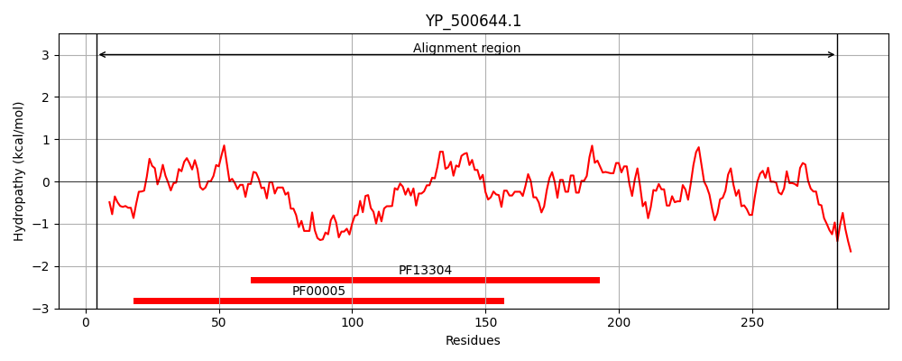
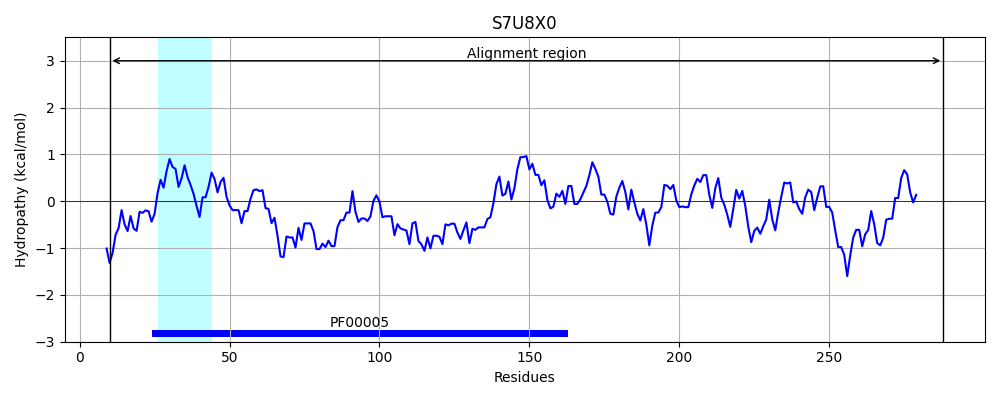
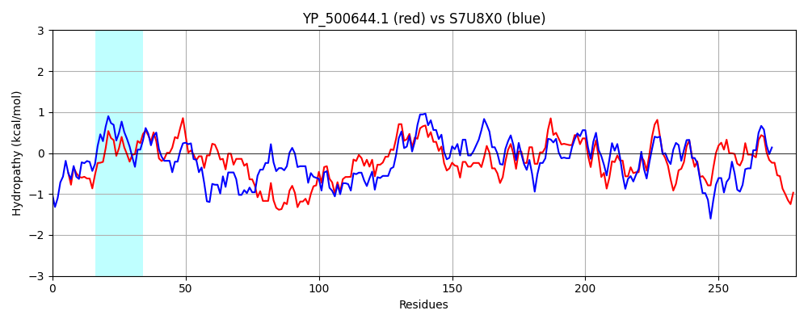

Hit Accession: S7U8X0
Hit TCID: 3.A.1.149.3
Hit Description: gnl|BL_ORD_ID|20068 gnl|TC-DB|S7U8X0|3.A.1.149.3 ABC transporter ATP-binding protein OS=Geobacillus sp. WSUCF1 GN=I656_01619 PE=4 SV=1
Mach Len: 279
e:0.000000
Query TMS Count : 0
Hit TMS Count: 1
TMS-Overlap Score: 0.000000
Predicted Substrates:None
BLAST Alignment:
Score: 681 , Bit scores: 266 bits, E-value: 4.7e-89, Alignment length: 279, Percentage identity: 47
Query: 4 IELSNVNYSSDQFNLKNISFKVPQGFVTGFIGRNGAGKTTIIRLIMDLYQPQTGVIRVLEEDMALNPIELKNRIGFVYSENYFNERWTTKQLEKMIAPFYRKWDHQVFEFYLEKFDLPINKSIKTFSTGMKMKLSLAVAFSHHAELYIFDEPTSGLDPLARNELLEIIQQELIDENKTIFMSTHIISDLEKIADYIIHLSDGEVILNGSKEQLLQRYQVVSGAIEDLDDELASLLIYEEHKRTGFIGLTEHAQVFKEILGHKVNITTPSIENLMVYLEK 282
+E+ N+ F+LKNISF + +G++ GFIG NGAGK+T I+LIM+L G I+V D E+K RIGFV+ ENYF + T ++++++APFY+ WD ++F Y+++F LP+ K IK S GMKMKLSLA+A SHHAEL I DEPTSGLDP+ R+ELL+I+ + DEN+ +F STHI SDL+KIADYI ++DG +I + +K+++ + Y +V G E L + L I + + GF LT+ Q K ILG K+ + PS+E+++VY ++
Sbjct: 10 LEVRNLRKEFKGFSLKNISFVLEKGYIMGFIGPNGAGKSTTIKLIMNLIHKDEGEIKVFGLDNVKYEKEIKERIGFVFDENYFYDELTISEVKRVVAPFYKNWDDKLFYKYIKEFSLPLKKKIKHLSKGMKMKLSLAIALSHHAELLIMDEPTSGLDPIIRSELLDILSSFIQDENRGVFFSTHITSDLDKIADYITFINDGNIIFSCTKDEIFENYGLVKGPKELLHSSIQPLFISVKENQFGFEALTKDKQKIKRILGDKIIVDKPSLEDIIVYFQR 288 | Protein Hydropathy Plots: |
|---|
|  |  |
Pairwise Alignment-Hydropathy Plot:
|
|---|
|  |